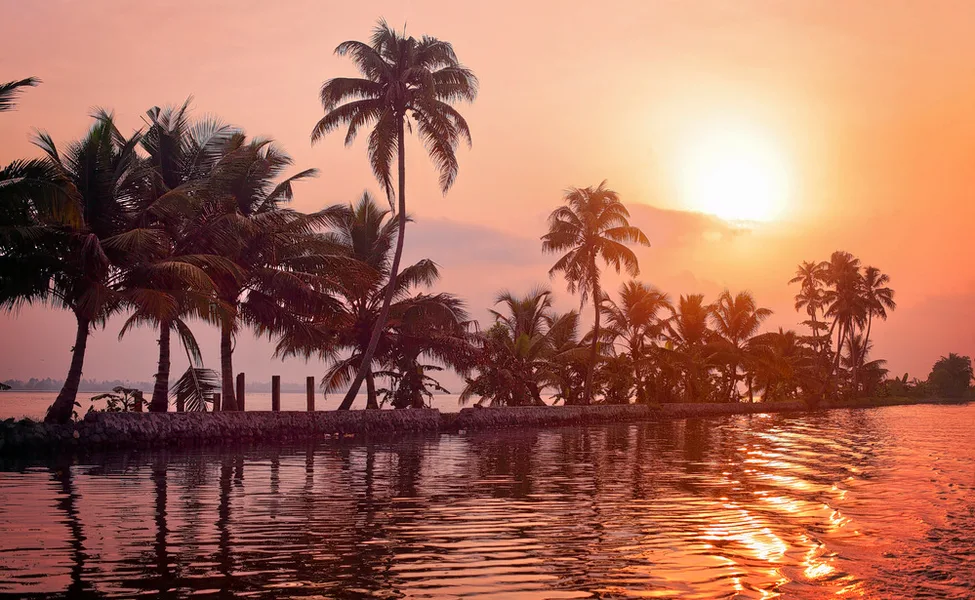

STUNNING SOUTH
Duration - 10D/9N
|  | From the majestic sandy beaches to the backwaters sparkling the lights of sunset, southern India is an ideal spot for touring. Having a plethora of activities to enjoy and lots of tasty food to munch on, South India family tour packages will let you enjoy the best of vacation. | ||||||||
| Offering a full-fledged package of beauty and mystery and dotted with many eye-catching destinations away from the hustle and bustle of the city, the Southern part of India is dotted with some of the best locations perfect for a trip. Be it the refreshing vibes of Ooty or the serene plantations of Munnar; South India is the best spot if you are looking for a place to plan your trip. |
Highlights -
-
- The queen of the hills - Ooty
- A session of boating and travelling on a toy train
- Visit Rajamalai National park and Mattupetty dam
Itinerary -
-
Day 1 - Arrival at Bangalore airport
- South India family tour packages start as you arrive at Bangalore airport, where you will be greeted by our representative and will be transferred to the hotel.
- After reaching, check-in at the hotel and unwind. Later, set out to explore the hottest places of the city.
- You will be visiting the ISKCON Temple, Cubbon Park, Lal Bagh Gardens, Bull Temple, Jama Masjid and Kempegowda Fort.
- Head back to the hotel for an overnight stay.


Day 2 - Trip to Mysore (144 Kms | 3 Hours)
- After having breakfast, check out from the hotel and start your journey to Mysore.
- As you reach Mysore, Check-in at the hotel and enjoy the rest of the day on your own.
- In the evening, go for a shopping spree and buy fine quality silks, sandalwood, jasmine, and rosewood items, stone carved statues, Mysore paintings, incense sticks, Mysore Pak at Krishnaraja Circle, Sayyaji Rao Road, Devaraja Road, Dhanvantri Road and Ashoka Road.
- Head back to the hotel for an overnight stay.


Day 3 - Mysore Local Sightseeing
- After breakfast, get ready as your family holiday packages in South India invites you for a sightseeing tour of Mysore.
- Take a tour of the Mysore palace, this palace was a royal residence of Wodeyar rulers and is one of the most famous forts in India.
- A visit to Lalitha Mahal Palace, Railway Museum, Jayachamarajendra Art Gallery, Mysore Zoo, St. Philomena’s Cathedral, Devaraja Fruit and Vegetable Market.
- Head to the Chamundi Hills and Brindavan Gardens for a memorable experience.
- Return back to the hotel for an overnight stay.


Day 4 - Mysore to Ooty (125 Kms | 3.5 Hours)
- After breakfast, check out from the hotel and start your journey to Ooty.
- As you reach Ooty, check-in at the hotel and have this day at leisure
- In the evening, head out to visit the nearby places and roam like a local.
- Reach back to the hotel for an overnight stay.

Day 5 - Ooty Sightseeing Tour
- Wake in the morning to a delightful breakfast and embark on the 7th day of your Family holiday packages in South India with full energy.
- Take a drive to Ooty lake and enjoy a peaceful boat ride in the crystalle water.
- Ride the famous toy train to witness the scenic beauty of Ooty.
- Head out to visit the botanical garden, Dodabetta peak and Ooty rose garden.
- Return back to the hotel for an overnight stay.

Day 6 - Ooty to Munnar (242 Kms | 7 Hours)
- Enjoy a delicious breakfast and check out from the hotel as today you will be heading to Munnar.
- As you reach Munnar, get checked-in at the hotel and have some rest.
- In the evening, head out to visit the tea gardens and tea museum, witness tea processing in the tea factory and try some flavoured tea.
- Head back to the hotel for an overnight stay.


Day 7 - Munnar Local Sightseeing
- After having breakfast, get ready to explore the beautiful town of Munnar.
- Experience Jungle safari in the Rajamalai National Park, home to the endangered Nilgiri Tahr and later proceed for a visit to Mattupetty dam.
- Reach to the hotel for an overnight stay.


Day 8 - Day in Alleppey backwaters
- After breakfast, check out from the hotel and travel to Alleppey.
- As you reach, check-in at the houseboat and spend the day on deck, witnessing the mesmerizing beauty of the Backwaters.
- Have an overnight stay at the boathouse.

Day 9 - Alleppey to Cochin
- After breakfast, check out from the houseboat and start travelling to Cochin.
- Reach Cochin and after check-in at the hotel, spend the remaining day at leisure.
- Head out to visit places like Jew town, Paradesi Synagogue, Mattancherry palace.
- In the evening, enjoy a boat ride at Wellington Island and head back to the hotel for an overnight stay.


Day 10 - Departure
- After breakfast, check out from the hotel and get dropped off at Cochin Airport for your return journey as your South India family packages comes to an end.
Inclusion -
-
- Private cabs
- Accommodation
- Meals
Exclusion -
-
Meals which don't find their mention in the package are not included in the package.
Other personal expenses, entrance tickets, and hotel taxes (if any) will have to be borne by the travellers.